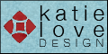

These generous individuals and organizations help sponsor Critical Ceramics.
Please consider making a donation to Critical Ceramics. As our way of saying thank you for your donation, Critical Ceramics provides a banner link to your website. For more information, download a PDF copy of our sponsor info sheet (Adobe Acrobat Reader required).

Ceramics: Art & Perception | Technical.


Office for the Arts at Harvard.

Florida State University Graduate Program in Ceramics.
The Australian National University.
Discover more about UK artist and Critical Ceramics supporter Edith Garcia.

Ayumi Horie Pottery supports Critical Ceramics.

Kate Love Design helps sponsor Critical Ceramics.

Haystack Mountain School of Crafts.
Watershed Center for the Ceramic Arts has supported Critical Ceramics from day one!
The following have made time, material, or financial donations.
2008:
Susan Tunick
Denise Pelletier
2008:
LEF Foundation
Ed Eberle
2007:
Baltimore Clayworks
Florida State University
LEF Foundation
Ohio State University
W.L. Rees
Studio Potter
2006:
Baltimore Clayworks
Mary Barringer
Zen Parry
2005:
Mary Barringer
BlueRaku Studios/Lindsey Bailey
William Daley
June Woest
2004:
Rebecca Harvey
2003:
Macromedia
Richard Shaw
2002:
Akio Takamori
2001:
Ron Meyers